Design Challenge — 2020
Wish Design Challenge
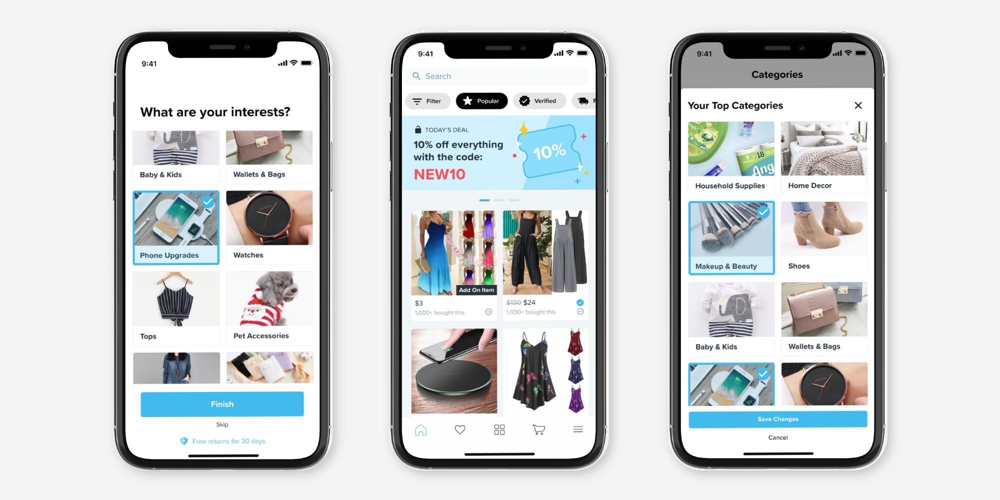
This was part of the interview process with Wish — Design Challenge. The prompt asked to improve on one problem in the app and I chose to improve the customizability and personalization of one's feed.
View the final deliverables.
View the final deliverables.
Role
Product DesignerUser Researcher
Tools
Adobe DrawFigma
Zoom
Timeline
4 days, Jul 2 to July 5
Product space
Users don't expect to have lots of search input of text interactions; therefore, the search option is considered well put to use for those who specifically know what they want - the brand, the model name and number, etc.
02 — Prioritize price over brands, packaging, and fast delivery
03 — Are likely to have smartphones
04 — Are largely underserved by current shopping platforms
Problem Scope
Initial Observations
Since this was my first time using Wish, I made initial observations on my first interactions, nothing things that can be improved and the user flows.
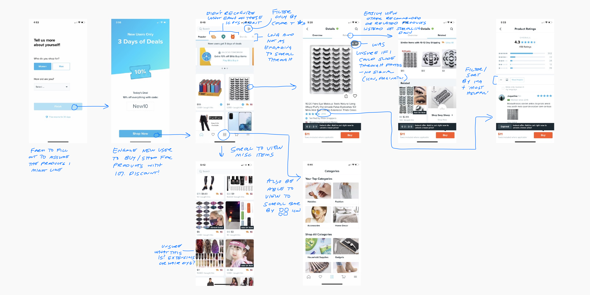
Teardown of the Wish mobile app.
Initially logging into the app, I was opened up with a form to screen my demographic - gender and age, which I assume led to the products I am interested in.
Once arriving on the main catalog page, an overwhelming variety of items were presented to me, only a few being relevant to my interests - i.e., masks and face coverings.
Once arriving on the main catalog page, an overwhelming variety of items were presented to me, only a few being relevant to my interests - i.e., masks and face coverings.
To further get a scope of the problems I was facing and to further understand the product space, I did a teardown of current competitors' apps AliExpress and Zulily, alongside Wish, to assess the strengths and needed improvements.
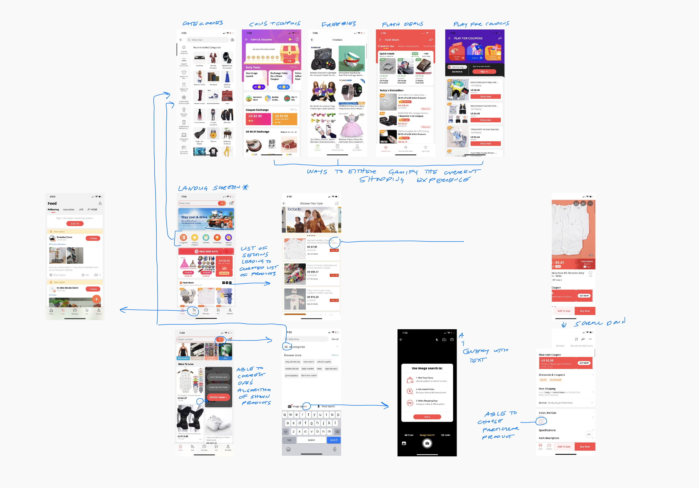
AliExpress
Like Wish, AliExpress has a strong focus on affordable products. The app includes features such as freebie raffles and giveaways, a chance to gain coins and coupons through games, and flash deals, to engage with their customers and aim for user retention.
They also allow people to filter out certain products in their feed to work towards their interests.
They also allow people to filter out certain products in their feed to work towards their interests.
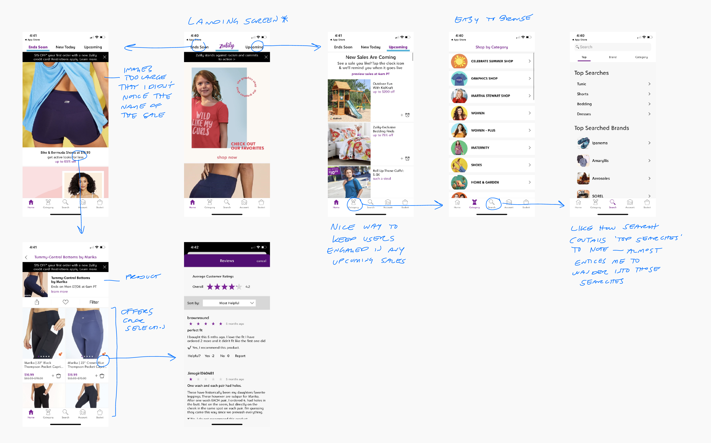
Zulily
Zulily specializes in selling clothing, footwear, and kid and home products.
Connecting Peter's, Wish's CEO, statement about less focus on the search query, Zulily offers another approach to search tabs. They offer 'top searches' to have people still explore a range of products in the search query.
Connecting Peter's, Wish's CEO, statement about less focus on the search query, Zulily offers another approach to search tabs. They offer 'top searches' to have people still explore a range of products in the search query.
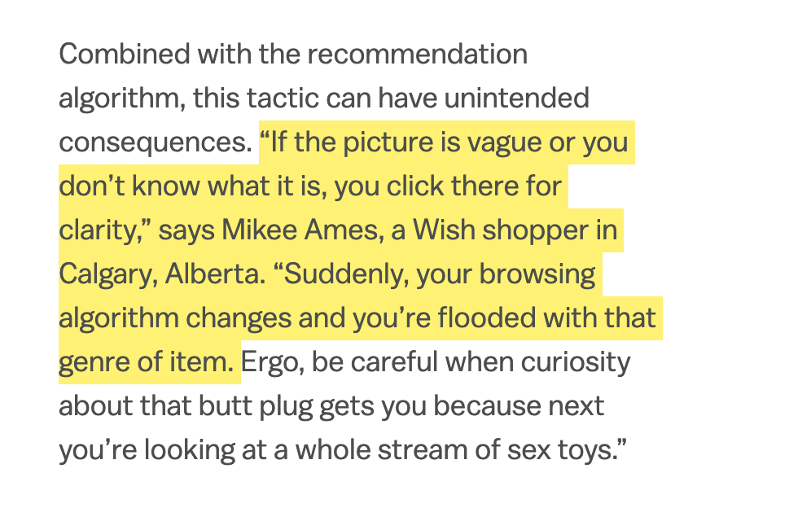
From a Vox article, there were complaints said by current users that the algorithm is used against them when they accidentally click an item that they were no longer interested in.
I specifically found AliExpress' filter out feature to be a quick solution for this problem, as people could simply remove items from their feed that they find inappropriate or irrelevant.
I specifically found AliExpress' filter out feature to be a quick solution for this problem, as people could simply remove items from their feed that they find inappropriate or irrelevant.
Problem
People are faced with information overload with irrelevant items presented to them and, therefore, either take a longer time to find items they are actually interested in or feel disinterested in shopping.
User Test (on the problem)
I asked them to download Wish on their phone and browse the app, while speaking aloud their thoughts, especially noting the current screens they were on. While they spoke their initial impressions, I followed along using my own phone to reference the features and screens they discussed.
User Test Insights
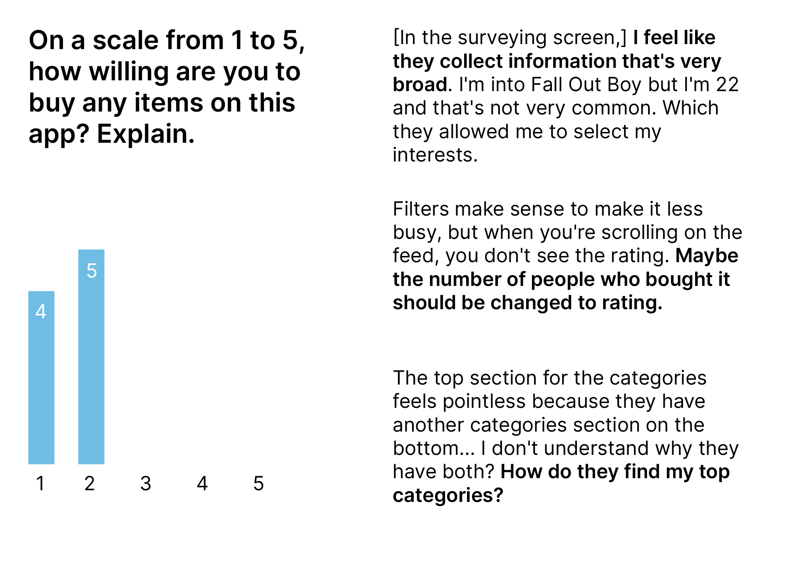
All felt the app was unreliable due to the quality of images, lack of verification, and an overwhelming variety of images that didn't spark interest.
The top 'Categories' slide bar felt redundant since categories could also be accessed on the bottom. Most preferred the bottom location because it's visibility with titles paired with images; whereas, the top slide bar felt never-ending.
The bottom navigation was straightforward, as they viewed the icons to be universal. However, the icons in the top slider felt ambiguous, especially with the icon referencing 'speed delivery'.
The top 'Categories' slide bar felt redundant since categories could also be accessed on the bottom. Most preferred the bottom location because it's visibility with titles paired with images; whereas, the top slide bar felt never-ending.
The bottom navigation was straightforward, as they viewed the icons to be universal. However, the icons in the top slider felt ambiguous, especially with the icon referencing 'speed delivery'.
Solution
Make interests and products relevant by giving users the chance to personalize and customize their feed.
Brainstorm
Started with 3 initial ideas and funneled them down to one using SWOT analysis method to help organize my ideas, in relation to the business goals and user goals.
Idea 01 — Categorize the feed by celebration, product type, etc. in sections, similar to AliExpress.
Idea 02 — Allow users to filter out certain products if they find the products don't match their interests.
Idea 03 — Survey users on the first screen and allow them to change their interests later on.
Idea 02 — Allow users to filter out certain products if they find the products don't match their interests.
Idea 03 — Survey users on the first screen and allow them to change their interests later on.
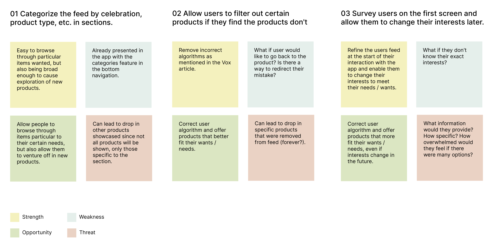
Out of the features ideated, I decided to go with surveying users on the first screen and allow them to change their interests later on AND enabling users to correct algorithm changes with a quick 'filter out' button on the product.
Ideation
When ideating and sketching possible user flows, I took in mind the content requirements needed to craft an efficient and feasible feature.
01 — Survey before landing on the home screen, which includes list of categories to choose from.
02 — Able to access and edit current interested categories.
03 — Quick feature on product to filter out in the case that product doesn't match current interests.
02 — Able to access and edit current interested categories.
03 — Quick feature on product to filter out in the case that product doesn't match current interests.
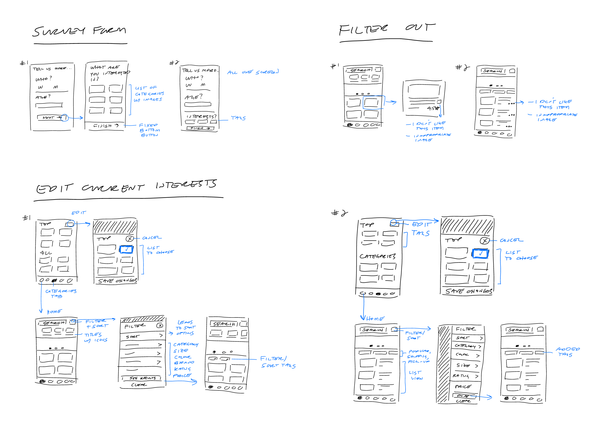
I sketched out 2 low-fi wireframes for each step to test out the possible options.
Some insights from the initial testing with the low-fi sketches...
01 — Preference to separate the survey form in 2 pages because the first screen would include mandatory information and the second screen would be optional, with a skip button added.
02 — Filters to be visible, rather than hidden in an icon.
02 — Filters to be visible, rather than hidden in an icon.
Based on my insights, I took a dive into research on personalized feeds and more inspiration on filters.
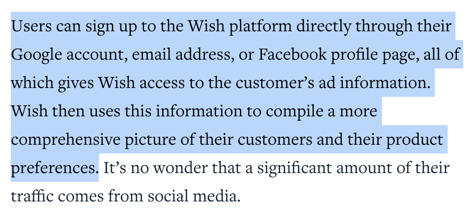
Taking in mind my research on how feeds were personalized to the specific account, I reformed the use of the new feature of customizing categories.
If users sign up with Facebook or Google, they still have the option to fill out the interested categories, but this feature primarily suits those who only enter their email, as their information is not as visible compared to signing up with a Facebook or Google account. It would also let users feel like they have more agency if they chose to fill out their interests.
If users sign up with Facebook or Google, they still have the option to fill out the interested categories, but this feature primarily suits those who only enter their email, as their information is not as visible compared to signing up with a Facebook or Google account. It would also let users feel like they have more agency if they chose to fill out their interests.
I also looked towards Target and DoorDash for exposing filters. Both apps had their filter and sort by completely visible on the main screen, which made them easily accessible.
Taking in mind these new insights and research, I added major improvements to the final prototype.
Taking in mind these new insights and research, I added major improvements to the final prototype.
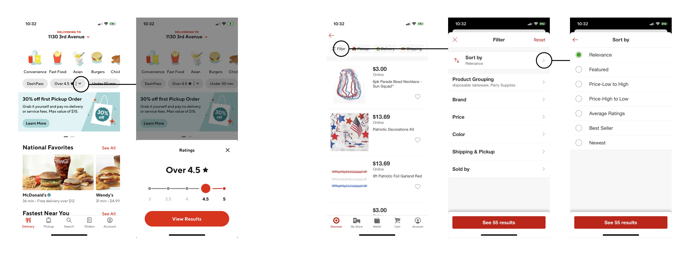
DoorDash (left) and Target's (right) filters.
Final Prototype
Pick what interests you.
No need to feel overwhelmed with items that don't meet your preferences. Choose categories that will pop up in your feed.
Access filtered feeds, one click away.
No longer scroll through endless categories. All filters and filtered feeds (verified, fast shipping, pick-up, and flash-sale) are located at the top.
Still worrisome on trusted products? Filter your feed to 'verified' items.
Still worrisome on trusted products? Filter your feed to 'verified' items.
Change your top categories.
Have your product preferences changed? Easily change your top categories shown in the Categories tab to keep your feed relevant to your current tastes.
Filter out products that are irrelevant to your tastes.
Find an inappropriate image or a product that doesn't match your preferences? Easily remove the product from the feed one click away.
Final Thoughts
I definitely think that an extra step in the survey going over categories to choose from is an effective way to give people a chance to personalize and customize their feed. Giving people the chance to choose their ‘top categories’ entails a sense of agency they have, along with filtering out products they may find not relative.
Despite time constraints, I am happy with how the challenge turned out. In the next step of my process, I would want to test my final prototype with current customers, beyond testing colleagues of mine, to validate my original assumptions. I would also like to conduct more research on alternative formats of surveying users.
Despite time constraints, I am happy with how the challenge turned out. In the next step of my process, I would want to test my final prototype with current customers, beyond testing colleagues of mine, to validate my original assumptions. I would also like to conduct more research on alternative formats of surveying users.
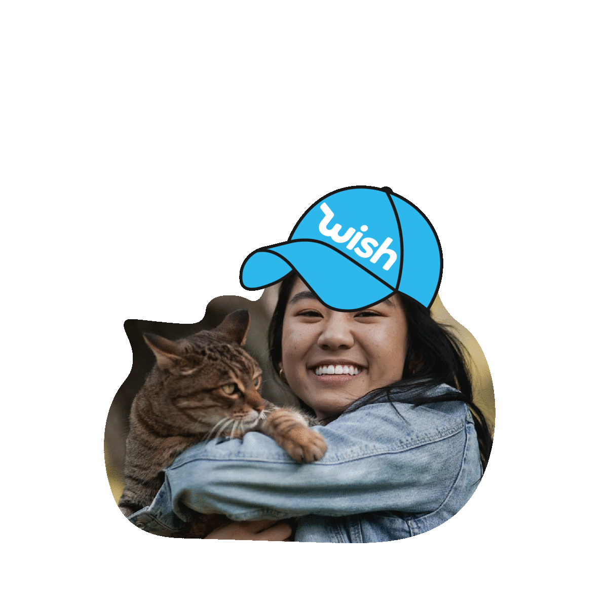